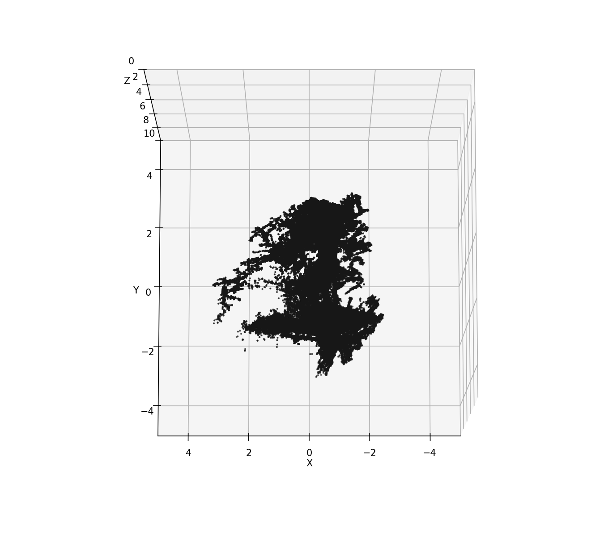

& Structure from Motion
SYDE 671 · Assignment 4 · James Xie
PART 4 · TRIANGULATION IN
STRUCTURE FROM MOTION
Estimate camera poses, refine triangulated points, and reconstruct a statue from multiple views.
(a) Candidate camera poses
Compute E = KTFK using the supplied fundamental matrix for B21–B22 and the focal length of 719.5459 pixels. Decompose E by SVD to get two proper rotations and a unit translation direction. Pair each rotation with both signs of the direction.
0.98305251 -0.11787055 -0.14040758 -0.11925737 -0.99286228 -0.00147453 -0.13923158 0.01819418 -0.99009269
0.97364135 -0.09878708 -0.20558119 0.10189204 0.99478508 0.00454512 0.20406010 -0.02537241 0.97862951
The translation candidates are ±(0.99941228, −0.00886961, 0.03311219). Rotation B with positive translation matches the supplied example within 0.000046 per entry.
(b) Linear triangulation
For each observation (u, v), use the camera matrix rows m₁, m₂ and m₃ to build two equations in the homogeneous 3D point. Take the last right singular vector of the stacked system and divide by its last coordinate.
The first supplied match reconstructs to (0.676717, −1.102419, 4.660340). It differs from the starter reference by at most 0.001760. An independent eigensolve of ATA reproduces the SVD solution within 10−10.
(c) Reprojection error and Jacobian
Project the 3D point into each camera, divide by depth, and subtract the observed pixel coordinates. Differentiate the division to form two Jacobian rows per camera.
On the supplied two-view fixture, the residual and the 4 × 3 Jacobian match the reference within 10−6 per entry. The analytic derivative also agrees with a central finite-difference check on a synthetic scene.
(d) Gauss–Newton refinement
Start from the DLT point and take 10 Gauss–Newton steps. At each step solve JΔ ≈ r and subtract Δ from the current point. On the supplied four-camera fixture, the stacked reprojection residual norm fell from 98.7354 to 95.5948 pixels.
(e) Camera pose selection
Triangulate all 50 sparse matches from B21–B22 under each pose. A point counts only when its depth is positive in both camera frames, using RX + t in the second view.
| Rotation | +t | −t |
|---|---|---|
| A | 0 | 0 |
| B | 50 | 0 |
Rotation B with +t is the selected pose.
(f) Statue reconstruction
Apply the supplied bundle adjustment and frame merging to estimate five camera poses and 152 sparse points. Triangulate the supplied dense matches from all four adjacent pairs in the merged coordinate system.
| Pair | Matches |
|---|---|
| B21–B22 | 29,189 |
| B22–B23 | 20,932 |
| B23–B24 | 16,264 |
| B24–B25 | 114,612 |

A house needs enough overlapping views to cover multiple facades and areas hidden by corners or vegetation. Repeated windows can produce incorrect matches, and distant surfaces need enough change in viewpoint for reliable depth. More images also increase the cost of matching and bundle adjustment.